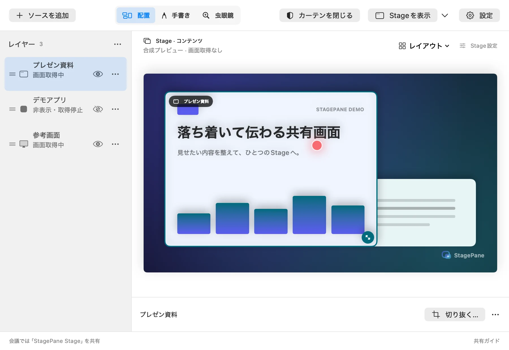
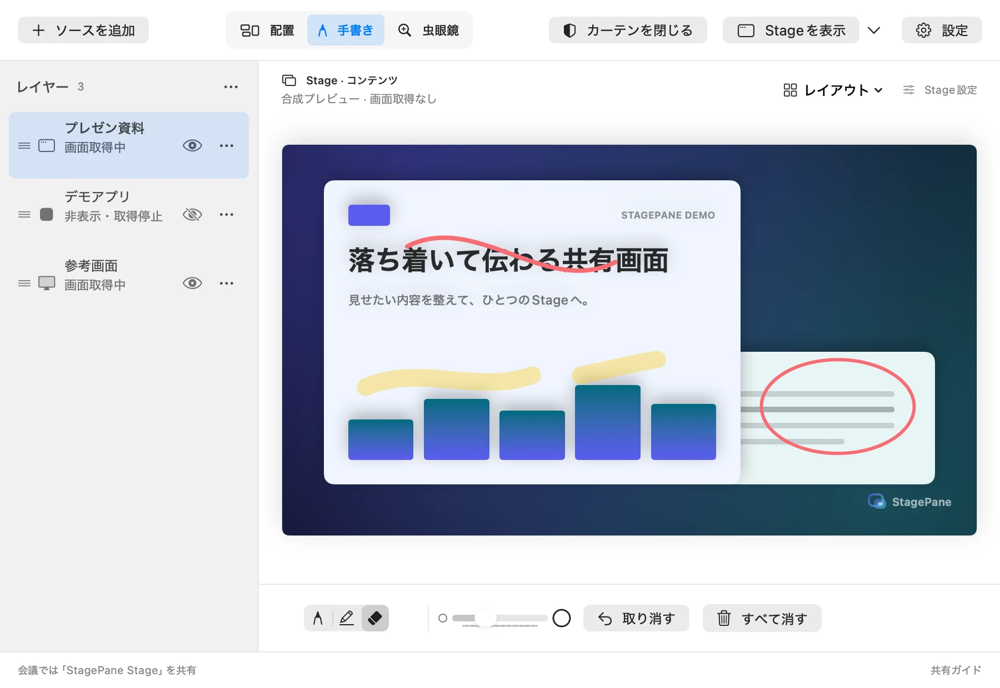
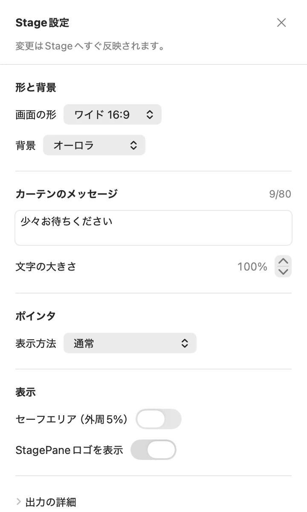

重ねる、必要な範囲に切り抜く
レイヤーを並べ、見せたい範囲を整えます。新UIでは一覧のドラッグで重なり順を変更。切り抜きは手元で下書きし、適用したときだけStageに反映します。
画面共有のためのmacOSアプリ
複数の資料やアプリを、ひとつの共有ウインドウに。手元で配置・切り抜き・手書きを整え、会議アプリではStageだけを共有します。
macOS 14以降 · Apple Silicon / Intel

以下は開発中の新UIでの操作例です。App Store公開版とは一部異なります。
レイヤーを並べ、見せたい範囲を整えます。新UIでは一覧のドラッグで重なり順を変更。切り抜きは手元で下書きし、適用したときだけStageに反映します。
ペンや蛍光ペンで大事な場所を示し、消しゴムで整える。開発中の虫眼鏡では、細部を拡大して観客に見せられます。
⇧⌘H ですぐにStageを覆い、次の内容を準備できます。画面取得を終了するときは「すべて停止」を使います。


「ソースを追加」から、ウインドウ・アプリ・画面をAppleの選択画面で選びます。
Workspaceで配置や表示範囲を調整します。準備中はカーテンで観客向けの映像を隠せます。
会議アプリのウインドウ共有で「StagePane Stage」を選びます。共有対象を確認してからカーテンを開きます。
| 機能 | 無料版 | Pro |
|---|---|---|
| 同時に使えるソース | 4件 | アプリ側の上限なし |
| StagePaneロゴ | 表示 | 表示／非表示 |
| 配置・切り抜き・手書き・カーテン | 利用可 | 利用可 |
Proは買い切りです。利用できるソース数はMacの性能とOSの制約に依存します。価格と通貨はApp Storeとアプリ内の購入画面で確認できます。
会議アプリで「StagePane Stage」ウインドウを選んでください。Workspaceは手元の編集用です。アプリ全体や画面全体を共有するとWorkspaceも映る場合があるため、共有対象を確認してください。
カーテンは観客向けの映像を覆い、画面取得は継続します。「すべて停止」は取得を終了し、再接続待ちを含む全レイヤーを削除します。1件だけ一時的に隠す場合は、そのレイヤーの「非表示」を使います。
各ソースはAppleの選択画面で、その取得セッション用に許可します。アプリを選ぶと複数ウインドウが含まれる場合があるため、範囲を絞るには1つのウインドウを選びます。切り抜きはStageの表示範囲を変えるもので、選択したソース全体の取得範囲は変わりません。
メニューバーのStagePaneアイコンからWorkspaceやStageを再表示できます。macOS側で共有が終了したレイヤーは「選び直す」で再接続し、配置と切り抜きを保てます。「解除」で削除したレイヤーは、ソースを追加し直してください。
キャンバス上部の「Stage設定」で、形・背景・カーテン・ポインタを調整します。変更はStageへすぐ反映されます。「設定」（⌘,）は独立ウインドウで、一般設定、Pro、アプリ情報、プライバシー、画面共有の案内を確認できます。
製品の問い合わせは support@hinoshiba.com へ。購入・請求・返金は Appleの購入サポート をご利用ください。問題を報告するときはOS・アプリのバージョンと合成データでの再現手順を添え、実画面、私的なウインドウ名、会議URL、トークンなどは送らないでください。
選択した画面はMac上で処理します。会議への配信は、利用者が選んだ会議アプリが行います。StagePaneにアカウントは不要で、画像はコピーやPNG保存を選んだときだけ残ります。
選択した画面と手書きは、Mac上でStageを表示するために処理します。画面の配信は、利用者が選んだ会議アプリが行います。
設定はMacに保存します。保存するのはStageの形状と外観、ウインドウの動作、セーフエリアガイドとStagePaneマークの設定、ポインタのスタイル・大きさ・色・グロー、カーテンの文言と文字の大きさ、手書きツールの設定、レイヤー一覧の幅、およびWorkspace・Stage・設定・Pro・画面共有の案内・画面取得エラーの各ウインドウの位置と大きさです。Mac App Store版はこれに加えて、App Storeの評価依頼を表示する時期の判断にだけ使うローカルな3つの値（成功したセッションの回数、その最初の日付、評価依頼を最後に表示したアプリのバージョン）を保存します。画面、ソース名、Stage上のソースの配置、手書きは保存しません。手書きは作業中のメモリで扱い、「すべて停止」または終了で破棄します。「画像をコピー」はシステムのクリップボードへPNGを置き、ほかのアプリから参照できます。「PNGを保存」は選択した場所へ書き込みます。不要な画像は利用者が削除できます。
開発者はアプリ内の画面や個人データを収集しません。Proの購入・復元はAppleが処理します。このサイトはGitHub Pagesで配信され、接続情報は配信事業者に処理されます。
画面の選択はAppleの共有ピッカーで変更できます。切り抜きは表示範囲を変える機能で、選択したソース全体の取得範囲は変わりません。カーテンはStageの表示を覆い、取得を終了するには「すべて停止」を使います。
StagePaneは、画面、手書き、その他のデータを開発者や第三者へ送信しません。このアプリはネットワークのエンタイトルメントを持たずに配布されており、アプリ自身がネットワーク接続を開くことはできません。画面はソースが動作している間だけメモリで保持し、そのソースを非表示または解除したとき、「すべて停止」を選んだとき、終了したときに解放します。画面に由来するデータで残るのは、利用者自身が「画像をコピー」「PNGを保存」で作成した画像だけで、クリップボードまたは選択した場所に残ります。Proの購入・復元はAppleが処理し、その処理に画面は一切含まれません。
英語版のプライバシーポリシーは、JavaScriptなしで読める静的ページでも公開しています。
Apple Privacy · GitHub Privacy
問い合わせのメールアドレスと本文は対応のために必要な期間だけ保管し、削除依頼を受け付けます。
公式アプリはMac App Storeで配信しています。価格、追加購入の内容、対応環境はApp Storeとアプリ内の購入画面をご確認ください。購入・支払い・返金の手続きにはAppleの規定が適用されます。このサイトでは販売・決済を行いません。
Appleの購入サポート販売事業者の氏名、住所および電話番号については、「特定商取引法に基づく表記」の開示請求をいただいた場合、法令に基づき遅滞なく電子メールにて提供いたします。
購入判断前に確認できるよう、support@hinoshiba.comへご請求ください。購入済みである必要はありません。
参考: 特定商取引法ガイド本サイトならびに本サイトで紹介・公開しているアプリケーション、コンテンツ、成果物およびソースコード等は、制作者が個人(hinoshiba)として制作・提供しているものです。
これらは制作者が所属する組織・団体とは関係なく、所属組織・団体の公式な見解、製品、サービスまたは活動を示すものではありません。
本サイトおよび本アプリケーション等に関するお問い合わせ、サポートその他の責任は制作者個人が負うものであり、所属組織・団体はこれらの提供・運営には関与しておりません。
本サイトまたは本アプリケーション等の利用により生じた損害については、法令上認められる範囲において、制作者は責任を負わないものとします。
StagePaneはApache License 2.0でソースコードを公開しています。ビルド方法はREADMEをご覧ください。ローカルの開発ビルドは公式配布版ではありません。
ライセンス: ソースコードとロゴ・アイコンの著作物はApache License 2.0です。StagePaneの名称やロゴを、公式性や提携を示す商標として使う権利は付与されません。